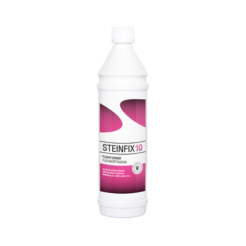
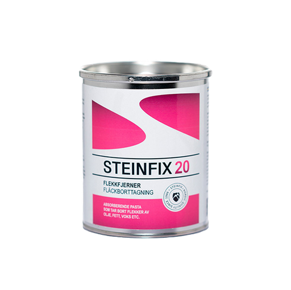
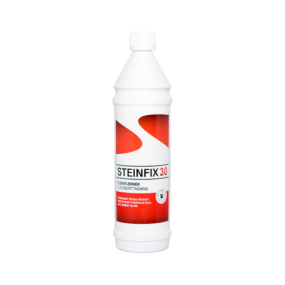
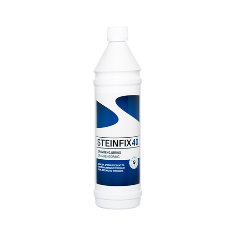
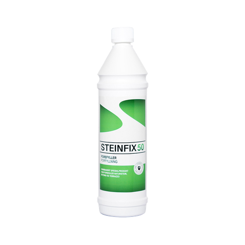
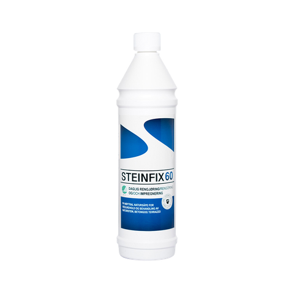
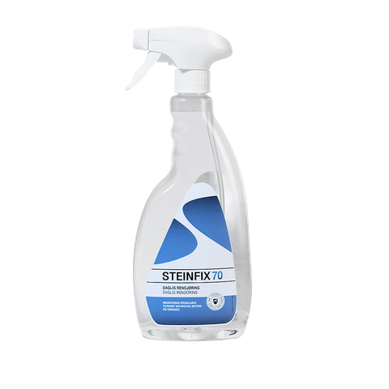
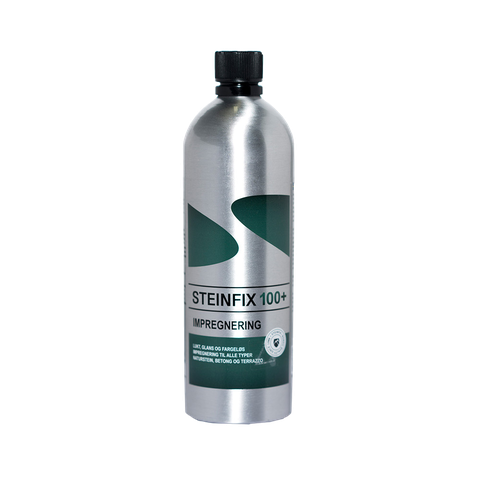

Steinfix golvvård
Vi är återförsäljare av Steinfix. Vi guidar er till rätt produkt för att underhålla golv och trappor av sten och terrazzo.

Steinfix 10
Fläckborttagning av mineralolja
- Avlägsnar effektivt alla typer av fläckar av mineralolja, tjära och asfalt
- Kan användas på alla typer av sten som tål vatten
- pH 8 i koncentrerad form

Steinfix 20
Fett, olja och vax
- Absorberande fläckborttagningspasta för vegetabiliskt fett och mineralfett, olja och vax
- Lätt att applicera, bra sugkapacitet
- Kan användas på alla typer av natursten
- Finns i 0,5-litersburk

Steinfix 30
Kalk och rost
- Mycket effektiv mot fläckar av kalk, rost, cement och korrosion
- Innehåller saltsyra – använd försiktigt på sedimentära bergarter som marmor och kalksten
- För alla typer av sten som tål vatten

Steinfix 40
Grovrengöring
- Alkalisk specialprodukt för djuprengöring av sten, betong och terrazzo
- Effektiv men skonsam mot sten och kakel
- Tar bort allmän smuts, stekfett, olja, sot m.m.
- pH 13,2 i koncentrerad form

Steinfix 50
Fläckborttagning av mineralolja
- Avlägsnar effektivt alla typer av fläckar av mineralolja, tjära och asfalt
- Kan användas på alla typer av sten som tål vatten
- pH 8 i koncentrerad form

Steinfix 60
Natursåpa
- pH-neutral naturprodukt för behandling och underhåll av sten, betong och terrazzo
- Rengör och ger ytan en hållbar skyddsfilm – skyddar impregneringen vid daglig städning
- Hög fetthalt, pH 7,8 i rengöringslösningen
- Svanenmärkt, tillverkad av vegetabiliska oljor
- Kan också användas för impregnering i koncentrerad form

Steinfix 70
Daglig rengöring av natursten
- Specialsåpa i sprayflaska för daglig rengöring och underhåll
- Särskilt bra på bänkskivor
- Tar bort de flesta fläckar, smuts, olja, sot och fett
- Skonsam mot stenen och ett miljövänligt alternativ
- För granit, marmor, gnejs, skiffer, sandsten, kalksten och komposit

Steinfix 100
Luktfri impregnering med NANO-effekt
- Impregnering för natursten, betong, terrazzo, keramik m.m.
- Tränger in osynligt och påverkar inte materialets utseende
- Skyddar mot vatten samt fett- och oljebaserade fläckar och smuts
- Inomhus, utomhus och i våtrum – diffusionsöppen och frosttålig
- Livsmedel kan placeras på behandlade ytor utan hälsorisk
- Förhindrar algbildning
Djuprengöring med Steinfix 40
- Golvytan ska vara ren och fri från grus så att den inte skadas när golvet skuras.
- Dosera Steinfix 40 med 2 dl till 10 liter vatten – mer vid stark nedsmutsning.
- Fördela blandningen och låt den verka i ca 10 minuter. Ytan ska vara våt under tiden.
- Skura med den bruna eller svarta rondellen på rengöringsmaskinen.
- Ta upp överskottet med mopp eller våtdammsugare, skölj med kallt vatten och sug upp igen.
- Låt golvet torka ordentligt innan du eventuellt impregnerar.
Impregnera därefter, till exempel med Steinfix 100 eller Steinfix 60.
Skötselanvisningar
Osäker på vilken produkt du behöver?
Kontakta oss så guidar vi dig till rätt sorts produkt för rätt ändamål.